Zu meiner Person
Carina Schlachter
Ich bin wissbegierig, zielstrebig, strukturiert, sehr lernfähig und scheue keine Arbeit. Teamwork und ein gutes Arbeitsklima sind mir sehr wichtig, denn nur zusammen entwickelt man die besten Lösungen.
In meiner Freizeit lese ich gerne Bücher (Deutsch und Englisch) und halte mich mit Sport fit: Yoga, Laufen oder ein pulstreibendes HIIT. Außerdem liebe ich es, am Wochenende aufwendigere Gerichte zu kochen und sie mit Freunden oder Familie zu genießen.
Kompetenzen

Mein Werdegang
Bildung
-
2007-2011
Grundschule
Grundschule Oberreitnau Lindau -
2011-2016
Realschule
Maria-Ward-Realschule Lindau -
2016-2019
Allgemeine Hochschulreife
Claude-Dornier-Schule Friedrichshafen -
2019-2022
Ausbildung zur Mediengestalterin
Tanner AG -
Seit 02/2022
Mediengestalterin im Technischen Marketing
Tanner AG -
Seit 09/2023
Teilzeit Mediengestalterin und UX-Design Studium
IU Hochschule
Praktika
-
2015
Kindertagesstätte zur heiligen Familie
Compassion-Projekt -
2016
Volksbank Allgäu-West-eG
Im Bereich Privatkunden, Bank und Serviceschalter -
2017
Tanner AG
Im Bereich des Technischen Marketings und der Technischen Dokumentation